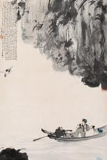

NGUYÊN VĂN
後赤壁賦
是歲十月之望，步自雪堂，將歸於臨皋。二客從予，過黃泥之阪。霜露既降，木葉盡脫，人影在地，仰見明月，顧而樂之，行歌相答。已而歎曰：“有客無酒，有酒無餚；月白風清，如此良夜何？”
客曰：“今者薄暮，舉網得魚，巨口細鱗，狀如松江之鱸。顧安所得酒乎？”
歸而謀諸婦。婦曰：“我有鬥酒，藏之久矣，以待子不時之需。”於是攜酒與魚，復遊於赤壁之下。
江流有聲，斷岸千尺。山高月小，水落石出。曾日月之幾何，而江山不可復識矣！ 予乃攝衣而上，履巉岩，披蒙茸，踞虎豹，登虯龍，攀棲鶻之危巢，俯馮夷之幽宮；蓋二客不能從焉。劃然長嘯，草木震動，山鳴谷應，風起水湧。予亦悄然而悲，肅然而 恐，凜乎其不可留也。
反而登舟，放乎中流，聽其所止而休焉。時夜將半，四顧寂寥。適有孤鶴，橫江東來。翅如車輪，玄裳縞衣，戛然長鳴，掠予 舟而西也。
須臾客去，予亦就睡。夢一道士，羽衣蹁躚，過臨皋之下，揖予而言曰︰“赤壁之遊樂乎？”問其姓名，俛而不答。“嗚呼！噫嘻！我知之矣！疇昔之夜，飛鳴而過我者 ，非子也耶？”道士顧笑，予亦驚悟。開戶視之，不見其處。

.PHIÊN ÂM
HẬU XÍCH BÍCH PHÚ
Thị tuế thập nguyệt chi vọng, bộ tự Tuyết Đường, tương qui ư Lâm Cao. Nhị khách tòng dư, quá Hoàng Nê chi pha[1]. Sương lộ kí giáng, mộc diệp tận thoát, nhân ảnh tại địa, ngưỡng kiến minh nguyệt, cố nhi lạc chi, hành ca tương đáp. Dĩ nhi thán viết: “Hữu khách vô tửu, hữu tửu vô hào; nguyệt bạch phong thanh, như thử lương dạ hà?”
Khách viết: “Kim giả bạc mộ, cử võng đắc ngư, cự khẩu tế lân, trạng như Tùng Giang chi lư. Cố an sở đắc tửu hồ?”
Qui nhi mưu chư phụ. Phụ viết: “Ngã hữu đấu tửu, tàng chi cửu hĩ, dĩ đãi tử bất thời chi nhu”. Ư thị huề tửu dữ ngư, phục du ư Xích Bích chi hạ.
Giang lưu hữu thanh, đoạn ngạn thiên xích. Sơn cao nguyệt tiểu, thủy lạc thạch xuất. Tằng nhật nguyệt chi ki hà, nhi giang sơn bất khả phục thức[2] hĩ! Dư nãi nhiếp y nhi thướng, lí sàm nham, phi mông nhung, cứ hổ báo, đăng cầu long; phan tê cốt chi nguy sào, phủ Phùng[3] Di chi u cung; cái nhị khách bất năng tòng yên. Hoạch nhiên trường khiếu, thảo mộc chấn động, sơn minh cốc ứng, phong khởi thủy dũng. Dư diệc tiễu nhiên nhi bi, túc nhiên nhi khủng, lẫm hồ kì bất khả lưu dã.
Phản nhi đăng chu, phóng hồ trung lưu, thính kì sở chỉ nhi hưu yên. Thời dạ tương bán, tứ cố tịch liêu. Thích hữu cô hạc, hoành giang đông lai, sí như xa luân, huyền thường cảo y, giát[4] nhiên trường minh, lược dư chu nhi tây dã.
Tu du khách khứ, dư diệc tựu thụy. Mộng nhất đạo sĩ, vũ y biên tiên, quá Lâm Cao chi hạ, ấp dư nhi ngôn viết: “Xích Bích chi du lạc hồ?”. Vấn kì tính danh, phủ nhi bất đáp. “Ô hô! y hi! Ngã tri chi hĩ! Trù tích chi dạ, phi minh nhi quá ngã giả, phi tử dã da?” Đạo sĩ cố tiếu, dư diệc kinh ngộ, khai hộ thị chi, bất kiến kì xứ.
DỊCH NGHĨA
BÀI PHÚ HẬU XÍCH BÍCH
Rằm tháng mười năm ấy[5], tôi đi bộ từ Tuyết Đường về Lâm Cao[6]. Có hai người khách đi theo, qua dốc Hoàng Nê[7]. Sương móc đã đổ, lá cây rụng hết, bóng người chiếu trên đất, ngửng đầu nhìn trăng sáng; ngắm bốn bề vui vẻ, đối lập nhau ca hát. Rồi than rằng: “Có khách mà không có rượu, có rượu mà không có thức nhắm, trăng thanh gió mát, tính thế nào với cái đêm nay?”
Khách nói: “Sẩm tối, tôi cất lưới được một con cá, miệng to vẩy nhỏ, hình dáng tựa con lư Tùng Giang[8]. Tìm đâu ra được rượu đây?”
Tôi về bàn với nhà tôi. Nhà tôi đáp: “Tôi có một đấu rượu, cất đã lâu, phòng lúc thầy bất thần dùng đến”. Thế là xách rượu và cá, lại đi chơi dưới chân núi Xích Bích một lần nữa.
Sông chảy róc rách, bờ dựng đứng ngàn thước[9]. Núi cao trăng nhỏ, nước rút đá nhô, ngày tháng cách chẳng bao lâu mà sông núi đã không còn nhận ra được!
Tôi bèn vén áo mà leo, giẫm mỏm đá lởm chởm, rẽ đám cỏ rậm rạp, ngồi lên những tảng đá hình con hổ, con báo, trèo lên những cành cây hình con cầu[10], con rồng, ngửng vịn tổ cắt chênh vênh, cúi xuống nhìn thủy cung thăm thẳm[11], mà hai ông khách theo tôi không kịp.
Bỗng có một tiếng hú dài, cây cỏ chấn động, núi hang vang dội, gió nổi, nước tung. Lòng nao nao buồn, nghiêm lặng mà sợ, thấy gợn người, không thể ở lâu được.
Tôi bèn quay về thuyền, thả nó ra giữ dòng, mặc cho nó trôi, ngừng đâu thì ngừng. Lúc đó gần nửa đêm, bốn bề tĩnh mịch, chợt có một con hạc lẻ bay ngang sông, từ phía đông lại, cánh xòe như bánh xe, xiêm đen áo mộc, vụt lên kêu một tiếng dài, lướt ngang thuyền tôi mà qua hướng tây.
Lát sau khách về, tôi cũng về nhà ngủ, nằm mộng thấy một đạo sĩ, áo lông phơi phới, tới phía dưới Lâm Cao, vái tôi, hỏi: “Đi chơi Xích Bích có vui không?”. Tôi hỏi tên tuổi thì cúi đầu mà không đáp. “Ô hô, a ha! Tôi biết rồi! Hồi khuya, bay qua thuyền tôi và kêu đó, phải là ông không?”. Đạo sĩ quay lại cười, tôi cũng giật mình tỉnh dậy, mở cửa ngó ra, thì đạo sĩ đã biến đi đâu mất.
Chú thích:
[1] Pha: nguyên văn là: 阪 (phản). Nhiều trang trên mạng bảo chữ này đúng ra phải viết là: 坡 (pha). (Goldfish).
[2] Có người đọc là chí. Đọc là thức thì có nghĩa là nhận biết ra.
[3] Thường đọc là Bằng. Theo sách Kim Quĩ của Thái Công thì đọc là Phùng.
[4] Cũng có người đọc là Kiết.
[5] Tức cũng năm 1082. (Goldfish).
[6] Tuyết Đường là tên ngôi nhà Tô Thức dựng hồi ông bị trích ở Hoàng Châu – Lâm Cao là tên đất; có sách lại cho là một cái đình.
[7] Hoàng nê nghĩa là bùn vàng.
[8] Huyện Tùng Giang ở Giang Tô có loại cá lư, ăn rất ngon.
[9] Nguyên văn có nghĩa là bờ bị cắt đứt; tức như sườn núi dựng đứng ở bờ sông (tuyệt bích),
[10] Cầu là một con rồng có sừng.
[11] Phùng Di là tên Hà Bá, thần sông, theo sách Kim Quĩ của Thái Công.